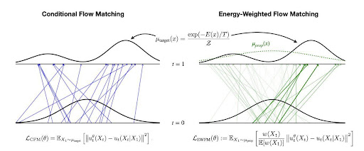

Overview
What the problem was, why it matters, and the shape of your approach.

Approach
Modelling
- Key modelling decision and why.
- Assumptions and where they break down.
Implementation
Tooling, simulation environment, hardware — whatever a reader would need
to judge the work. Inline code renders like this.
// A short, illustrative snippet — not the whole file.
result = solve(system, horizon=50)Results
What happened. Numbers beat adjectives here.
Results
| Method | Metric | Result |
|---|---|---|
| Baseline | Success rate | — |
| Ours | Success rate | — |
Takeaways
What you'd do differently, and what the work opens up next.